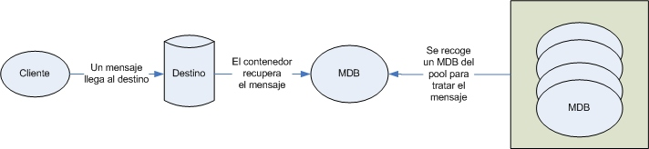
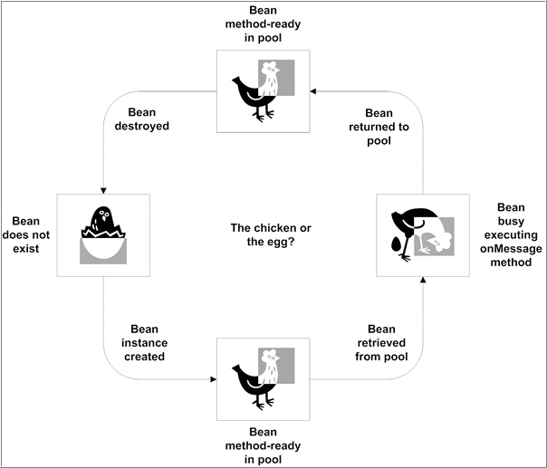
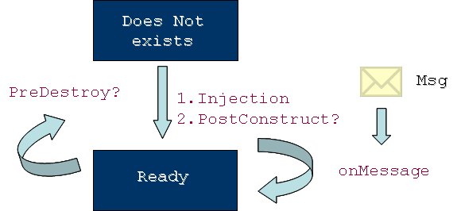
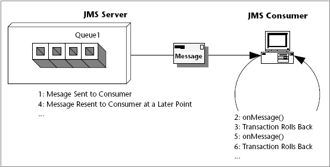

Message Driven Beans (MDBs)
Introducción
Un Message-Driven Bean o MDB (EJB dirigido por mensajes) es un oyente de mensajes que puede consumir mensajes de una cola o de una durable subscription. Dichos mensajes pueden ser enviados por cualquier componente JavaEE (cliente, otro EJB o una componente Web como un servlet). Incluso desde una aplicación o sistema que no use tecnología JavaEE.
Conceptualmente se diseñaron para que el servidor de aplicaciones proporcionase facilidades de multi-threading, esto es que múltiples consumidores procesen mensajes concurrentemente sin necesidad de desarrollar código adicional. Así, los MDBs proporcionan dicha facilidad al manejar los mensajes entrantes mediante múltiples instancias de beans alojados en el pool del servidor de aplicaciones.
Al igual que en el caso de los clientes JMS standalone que se basan en el método onMessage(), un MDB también contiene este método que se invoca automáticamente a la llegada de un mensaje. Sin embargo, los MDBs difieren de estos clientes en que el contenedor EJB realiza automáticamente varias tareas de inicialización que implementamos a mano en el cliente, como:
- Crear un consumidor asíncrono (MessageConsumer/QueueReceiver/TopicSubscriber) para recibir el mensaje. En vez de crear el consumidor en el código fuente, con un MDB asociamos el destino y la factoría de conexiones durante el despliegue. Si se quiere especificar una subscripción duradera o un selector de mensajes también se puede hacer en tiempo de despliegue.
- Registrar el listener de mensajes. El MDB registra el listener automáticamente sin que haya que codificar una llamada a setMessageListener.
- Especificar el modo de acuse de recibo. El modo de acuse de recibo por defecto es AUTO_ACKNOWLEDGE, y se utiliza a no ser que se cambien mediante una propiedad de configuración.
Para ello el MDB usa la anotación @MessageDriven para especificar las propiedades del bean o de la factoría de conexión, tales como el tipo de destino, la subscripción duradera, el selector de mensajes, o el modo de acuse de recibo.
Por defecto, el contenedor iniciará una transacción justo ANTES de llamar al método onMessage() y hará un commit de esta transacción cuando dicho método haga el return, a menos que la transacción esté marcada como rollback en el contexto del MDB.
Con respecto a otros EJBs, la diferencia fundamental con cualquier otro EJB es que el MDB no tiene interface local o remota. Solo la clase bean. Se parece a un Stateless Session Bean (SSB) porque sus instancias son short-lived y no retienen estado para un cliente específico. Pero sus variables pueden contener información de estado entre los diferentes mensajes de cliente: por ejemplo, un conexión a una base de datos, o una referencia a un EJB, etc...
Como un SSB, un MDB puede tener varias instancias intercambiables ejecutándose al mismo tiempo. El contenedor puede hacer un pooling de instancias para permitir que los mensajes se procesen concurrentemente, lo cual puede afectar al orden en que se reciben los mensajes. Por lo tanto, como la concurrencia puede afectar el orden en que se entregan los mensajes, nuestras aplicaciones deberán gestionar los mensajes que llegan en cadena, por ejemplo, mediante un control conversacional a nivel de aplicación que vaya cacheando los mensajes hasta que se reciban todos.
Por Qué Utilizar MDBs
Frente a la mala fama, en términos de escalabilidad, que ha acompañado hasta ahora a los EJBs (antes de EJB3 claro!) los MDBs siempre han mantenido el tipo. Esto se debe a una serie de características que tienen los MDBs.
Multihilo
Las aplicaciones de negocio pueden necesitar consumidores de mensajes multihilo que puedan procesar los mensajes de modo concurrente. Los MDBs evitan esta complejidad ya que soporta el multihilo sin necesidad de código adicional. Los MDBs gestionan los mensajes entrantes mediante múltiples instancias de beans (dentro de un pool), y tan pronto como un nuevo mensaje llega al destino, una instancia MDB sale del pool para manejar el mensaje.

Código de Mensajería Simplicado
Los MDBs evitan la necesidad de codificar los aspectos mecánicos asociados al procesamiento de mensajes (como buscar las factorías de conexiones o los destinos, crear las conexiones, abrir sesiones, crear consumidores y adjuntar listeners). Mediante EJB 3, el uso de situaciones por defecto para las circunstancias más comunes elimina gran parte de la configuración. En el peor caso, tendremos que ofrecer la información de configuración via anotaciones o mediante el descriptor de despliegue.
Inicio de Consumo de Mensajes
Para comenzar a recoger mensajes de la cola de peticiones, alguien necesita invocar el método apropiado dentro del código. En un entorno de producción, no queda claro quien y donde recae esta responsabilidad. El inicio de consumo de mensajes mediante un proceso manual claramente no es deseable. En un entorno de servidor, casi cualquier manera de ejecutar el método al inicio del servidor es altamente dependiente del sistema; del mismo modo ocurre para detener la recepción de mensajes de manera manual.
Mediante los MDBs registrados, podremos iniciar o detener estos componentes de una manera sencilla cuando se arranque o detenga el servidor.
Reglas de Programación
Igual que los EJBs, los MDBs son POJOs que siguen un sencillo conjunto de reglas y que en ocasiones tienen anotaciones:
- La clase MDB debe directamente (mediante la palabra clave implements en la declaración de la clase) o indirectamente (mediante anotaciones o descriptores) implementar un interfaz de listener de mensajes.
- La clase MDB debe ser concreta, ni abstracta ni final.
- La clase MDB debe ser un POJO y no una subclase de otro MDB.
- La clase MDB debe declararse pública.
- El constructor de la clase MDB no debe tener argumentos. Si no se tiene un constructor, el compilador implementará un constructor por defecto. El contenedor usa ese constructor para crear instancias de MDBs.
- No se puede definir un método finalize. Si es necesario alguno código de limpieza, se debería definir un método designado como PreDestroy.
- Los MDBs deben implementar los métodos de la interfaz MessageListener y esos métodos deben ser públicos, nunca estáticos o finales.
- Esta prohibido lanzar javax.rmi.RemoteException o cualquier excepción de ejecución. Si se lanza un RuntimeException, la instancia MDB finalizará.
Ejemplo de un Consumidor con MDBs
A continuación vamos a realizar el mismo consumidor que hicimos en la primera sesión, pero únicamente de forma asíncrona via MDBs.
@MessageDriven(mappedName = "jms/Queue", activationConfig = {
@ActivationConfigProperty(propertyName = "destinationType", propertyValue = "javax.jms.Queue")
})
public class ConsumidorMDBBean implements MessageListener {
public ConsumidorMDBBean() {
System.out.println("Constructor del MDB");
}
public void onMessage(Message message) {
TextMessage msg = null;
try {
if (message instanceof TextMessage) {
msg = (TextMessage) message;
System.out.println("Recibido MDB [" + msg.getText() + "]");
} else {
System.err.println("El mensaje no es de tipo texto");
}
} catch (JMSException e) {
System.err.println("JMSException en onMessage(): " + e.toString());
} catch (Throwable t) {
System.err.println("Exception en onMessage():" + t.getMessage());
}
}
}
Anotaciones de un MDB
Uso de la Anotación con @MessageDriven
Los MDBS son sin duda los EJBs más sencillos de desarrollar, y por tanto soportan muy pocas anotaciones. De hecho, la anotación @MessageDriven y su anidada @ActivationConfigProperty con las únicas anotaciones específicas de los MDBs.
La anotacion @MessageDriven utilizada en el ejemplo representa el caso típico que se utilizará la mayoría de las veces. La anotación se define así:
@Target(TYPE)
@Retention(RUNTIME)
public @interface MessageDriven {
String name() default "";
Class messageListenerInterface default Object.class;
ActivationConfigProperty[] activationConfig() default {};
String mappedName();
String description();
}
Destacar que todos los argumentos son opcionales, de modo, que en su uso más minimalista la anotación quedará así:
@MessageDriven public class GestorPeticionesCompraMDB
dejando todo los detalles para el descriptor de despliegue.
El primer elemento, name, especifica el nombre del MDB (en nuestro caso GestorPeticionesCompraMDB). Si el nombre del elemento se omite, el código utiliza el nombre de la clase como nombre del MDB. El segundo parámetro, messageListenerInterface, especifica que listener de mensajes implementa el MDB. El parámetro actionConfig se utiliza para especificar propiedades de configuración específicas del listener. Finalmente, mediante mappedName indicaremos la ruta JNDI del destino.
Implementado el MessageListener
Un MDB implementa un interfaz de listener de mensaje por la misma razón que los consumidores JMS implementan el interfaz javax.jms.MessageListener. El contenedor utiliza el listener para registrar el MDB en el proveedor de mensajes y pasar los mensajes de entrada a los métodos implementados en el listener.
Utilizar el parámetro messageListenerInterface de la anotación @MessageDriven es solo una manera de especificar un listener de mensajes. Podríamos hacer lo mismo de este otro modo:
@MessageDriven(
name="MiGestorPeticionesCompra",
messageListenerInterface="javax.jms.MessageListener")
public class GestorPeticionesCompraMDB {
Sin embargo, es más cómodo omitir el parámetro y especificar el interfaz con la palabra clave implements:
public class GestorPeticionesCompraMDB implements MessageListener {
Otra opción es especificar el interfaz del listener mediante el descriptor de despliegue, y dejar los detalles fuera del código. La elección entre un modo u otro suele ser cuestión de gustos, aunque algunas herramientas se sienten más cómodas con el segundo enfoque, ya que facilita la generación de los métodos del bean a partir del interfaz.
Uso de ActivationConfigProperty
La propiedad activationConfig de la anotacion @MessageDriven nos permite especificar la configuración específica de nuestro sistema de mensajería mediante un array de instancia de ActivationConfigProperty. La definición de ActivationConfigProperty es:
public @interface ActivationConfigProperty {
String propertyName();
String propertyValue();
}
Cada propiedad de activación es un par (nombre, valor) que el proveedor conoce, entiende y utiliza para iniciar el MDB. El mejor modo de ver como funcionan estas propiedades es mediante ejemplo. En el siguiente ejemplo podemos ver como configuramos tres de las propiedades más comunes:
@MessageDriven(
name="MiGestorPeticionesCompra",
activationConfig = {
@ActivationConfigProperty(
propertyName="destinationType",
propertyValue="javax.jms.Queue"),
@ActivationConfigProperty(
propertyName="connectionFactoryJndiName",
propertyValue="jms/QueueConnectionFactory"),
@ActivationConfigProperty(
propertyName="destinationName",
propertyValue="jms/PeticionesCompraQueue")
}
)
La propiedad destinationType le indica al contenedor que este MDB está escuchando de una cola. A continuación, connectionFactoryJndiName le indica el nombre JNDI de la factoría de conexiones que debe utilizarse para crear las conexiones JMS para el MDB. Y el destinationName indica que estamos escuchando mensajes que llegan a un destino cuyo nombre JNDI es jms/PeticionesCompraQueue.
A continuación veremos otras propiedades JMS que ya hemos estudiado en las sesiones anteriores.
acknowledgeMode
Ya sabemos que los mensajes no se eliminan de la cola hasta que el consumidor no envía el acuse de recibo. Para sesiones no transaccionales, hay que elegir el modo más apropiado para el proyecto. El más común y conveniente es AUTO_ACKNOWLEDGE. El otro modo soportado por los MDBs es DUPS_OK_ACKNOWLEDGE.
Para cambiar el modo de acuse de recibo lo haríamos del siguiente modo:
@ActivationConfigProperty(
propertyName="acknowledgeMode",
propertyValue="DUPS_OK_ACKNOWLEDGE")
El tratamiento del acuse de recibo por parte de JMS ya lo vimos en la segunda sesión: sesion02-apuntes.html#Controlar+el+Acuse+de+Recibo+de+los+Mensajes
subscriptionDurability
Si queremos que un MDB sea un subscritor duradero, tendremos algo así:
@ActivationConfigProperty( propertyName="destinationType", propertyValue="javax.jms.Topic"), @ActivationConfigProperty( propertyName="subscriptionDurability", propertyValue="Durable")
Para subscripciones no duraderas, podemos fijar el valor de la propiedad subscriptionDurability a NonDurable, aunque este es el valor por defecto.
messageSelector
La propiedad messageSelector es el homonimo MDB a aplicar un selector a un consumidor JMS. Si queremos hacer un selector con MDBs el cual obtenga aquellos mensajes del año 2008 haríamos:
@ActivationConfigProperty( propertyName="messageSelector", propertyValue="Anyo = 2008")
Los selectores de mensajes ya lo vimos en la segunda sesión: sesion02-apuntes.html#Selector+de+Mensajes
Uso de los Callbacks del Ciclo de Vida del Bean
El contenedor es responsable de:
- Crear instancias MDBs y configurarlas.
- Inyectar recursos, incluyendo el contexto 'message-driven'.
- Colocar las instancias en un pool gestionado.
- Cuando llega un mensaje, sacar un bean inactivo del pool (en este punto, el contenedor puede que tenga que incrementar el tamaño del pool.
- Ejecutar el método de listener de mensajes (método onMessage)
- Al finalizar la ejecución del método onMessage, devolver al pool el bean.
- Conforme sea necesario, retirar (o destruir) beans del pool.
Un MDB es un EJB, y como tal, tiene un ciclo de vida, el cual tiene 3 estados: no existe, disponible y ocupado.

Los dos callbacks de ciclo de vida de un MDBs son (1) PostContruct, el cual se llama inmediatamente un vez el MDB se ha creado, iniciado y se le han inyectado todo los recursos, y (2) PreDestroy, que se llama antes de quitar y eliminar las instancias bean del pool. Estos callbacks se suelen utilizan para reservar y liberar recursos inyectados que se usan en el método onMessage, que es lo que hemos hecho en nuestro ejemplo.

Para demostrar el uso de los callbacks, vamos a modificar el MDB de modo que cuando le llegue un mensaje, realice un acceso a la base de datos.
@MessageDriven(mappedName = "jms/Queue", activationConfig = {
@ActivationConfigProperty(propertyName = "destinationType", propertyValue = "javax.jms.Queue")
})
public class ConsumidorMDBJDBCBean implements MessageListener {
private java.sql.Connection connection;
private DataSource dataSource;
@Resource
private MessageDrivenContext context;
public ConsumidorMDBJDBCBean() {
System.out.println("Constructor del MDB");
}
@Resource(name = "jdbc/biblioteca")
public void setDataSource(DataSource dataSource) {
this.dataSource = dataSource;
}
@PostConstruct
public void initialize() {
try {
connection = dataSource.getConnection();
} catch (SQLException sqle) {
sqle.printStackTrace();
}
}
@PreDestroy
public void cleanup() {
try {
connection.close();
connection = null;
} catch (SQLException sqle) {
sqle.printStackTrace();
}
}
public void onMessage(Message message) {
TextMessage msg = null;
try {
if (message instanceof TextMessage) {
msg = (TextMessage) message;
System.out.println("Recibido MDB [" + msg.getText() + "]");
} else {
System.err.println("El mensaje no es de tipo texto");
}
// Accedemos a la base de datos;
this.preguntaBBDD("Total de Libros");
} catch (JMSException jmse) {
jmse.printStackTrace();
context.setRollbackOnly();
} catch (SQLException sqle) {
sqle.printStackTrace();
context.setRollbackOnly();
} catch (Throwable t) {
System.err.println("Exception en onMessage():" + t.getMessage());
context.setRollbackOnly();
}
}
private int preguntaBBDD(String mensaje) throws SQLException {
int result = -1;
Statement stmt = connection.createStatement();
ResultSet rs = stmt.executeQuery("SELECT COUNT(*) FROM LIBRO");
if (rs.next()) {
result = rs.getInt(0);
System.out.println(mensaje + " " + result);
}
if (stmt != null) {
stmt.close();
stmt = null;
}
if (rs != null) {
rs.close();
rs = null;
}
return result;
}
}
En el ejemplo vamos a utilizar el datasource del proyecto web (jdbc/biblioteca), el cual se supone que ya tenéis creado, así como la cola jms/Queue creada en la primera sesión.
Para evitar crear y destruir sesiones por cada llegada de un mensaje, utilizamos los métodos callbacks y la inyección de recursos. Primero inyectamos el datasource mediante la anotación @Resource en el método setDataSource. Esta anotación le indica al contenedor EJB que debería buscar el datasource jdbc/biblioteca vía JNDI y pasársela al método set. Tras inyectar los recursos, el contenedor comprueba si hay algún método anotado con @PostConstruct que deba invocarse antes de colocar el MDB en el pool. En nuestro caso, el método initialize, el cual se encarga de crear un conexión a partir de la fuente de datos.
En algún punto, el contenedor decir que nuestro bean debe salir del pool y ser destruido (puede que al para el servidor). El callback @PreDestroy ofrece esta posibilidad para limpiar los recursos de un bean. Nosotros lo hemos utilizado en nuestro método cleanup, que se encarga de cerrar la conexión con la base de datos.
Envío de Mensajes JMS desde MDBs
Además de los recursos de base de datos, los callbacks también se utilizan para gestionar los objetos administrados de JMS (los destinos y la factoría de conexiones). Y aunque parezca un poco irónico, la tarea que más se realiza dentro de un MDB es enviar mensajes JMS. Por ejemplo, cuando un MDB recibe una petición puede que algo funcione mal o que la petición sea incompleta, y por tanto, la mejor manera de notificar esto es vía JMS a una cola de error sobre la que estará escuchando el productor del mensaje.
Vamos a modificar el primer ejemplo para que si el mensaje que recibe no es de tipo texto escriba en una cola de error. Para ello, aprovecharemos las ventajas que ofrece el MDB para inyectar las recursos y el uso de los callbacks para la creación y destrucción de los recursos.
@MessageDriven(mappedName = "jms/Queue", activationConfig = {
@ActivationConfigProperty(propertyName = "destinationType", propertyValue = "javax.jms.Queue")
})
public class ConsumidorMDBJMSBean implements MessageListener {
private javax.jms.Connection jmsConnection;
@Resource(name = "jms/ErrorQueue")
private javax.jms.Destination errorQueue;
@Resource(name = "jms/QueueConnectionFactory")
private javax.jms.ConnectionFactory connectionFactory;
@Resource
private MessageDrivenContext context;
@PostConstruct
public void initialize() {
try {
jmsConnection = connectionFactory.createConnection();
} catch (JMSException jmse) {
jmse.printStackTrace();
}
}
@PreDestroy
public void cleanup() {
try {
jmsConnection.close();
} catch (JMSException jmse) {
jmse.printStackTrace();
}
}
public void onMessage(Message message) {
TextMessage msg = null;
try {
if (message instanceof TextMessage) {
msg = (TextMessage) message;
System.out.println("Recibido JMS-MDB [" + msg.getText() + "]");
} else {
System.err.println("El mensaje no es de tipo texto. Enviando mensaje a cola de error");
this.enviaMensajeError();
}
} catch (JMSException jmse) {
jmse.printStackTrace();
context.setRollbackOnly();
} catch (Throwable t) {
System.err.println("Exception en onMessage():" + t.getMessage());
context.setRollbackOnly();
}
}
private void enviaMensajeError() throws JMSException {
Session session = jmsConnection.createSession(true,
Session.AUTO_ACKNOWLEDGE);
MessageProducer producer = session.createProducer(errorQueue);
TextMessage message = session.createTextMessage("El mensaje recibido debía ser de tipo texto");
producer.send(message);
session.close();
}
}
Siguiendo el esquema del ejemplo anterior, hemos creado variables de instancia para almacenar la factoría de conexiones y la cola para los mensajes de error. También hemos utilizado los callbacks para crear y destruir la conexión con la cola.
Gestionando las Transacciones Distribuidas
En los ejemplos JMS de las primeras sesiones, indicábamos si la sesión JMS era o no transaccional. Por otro lado, si revisamos los ejemplos MDB no indicamos en ningún sitio nada sobre la transaccionalidad. De hecho, le cedemos la decisión al contenedor para que utilice el comportamiento por defecto para los MDBs.
En concreto, por defecto, el contenedor comenzará una transacción antes de iniciar el método onMessage y realizará el commit tras el return del método, a no ser que se marque como rollback mediante el contexto message-driven.
Una aplicación JavaEE que utiliza JMS puede utilizar transacciones para combinar el envío o recepción de mensajes con modificaciones a una base de datos y cualquier otra operación con un gestor de recursos. Las transacciones distribuidas nos permiten acceder a múltiples componentes de una aplicación dentro de una única transacción. Por ejemplo, un Servlet puede empezar una transacción, acceder a varias bases de datos, invocar a un EJB que envía un mensaje JMS y realizar un commit de la transacción. Sin embargo, persiste la restricción vista en la sesión anterior respecto a que la aplicación no puede enviar un mensaje JMS y recibir una respuesta dentro de la misma transacción.
Transacciones CMT y BMT dentro de un MDB
Con los MDBs, podemos utilizar transacciones tanto CMT como BMT. Para asegurar que todos los mensajes son recibidos y manejados dentro del contexto de una transacción, utilizaremos transacciones CMT, anotando el método onMessage con el atributo transaccional a Required (es el atributo por defecto). Esto significa que si no hay ninguna transacción en progreso, se comenzará una nueva antes de la llamada al método y se realizará el commit al finalizar el mismo.
Al utilizar transacciones CMT podemos emplear los siguientes métodos del MessageDrivenContext:
- setRollbackOnly: utiliza este método para el manejo de los errores. Si salta una excepción, setRollbackOnly marca la transacción actual para que la única salida de la transacción sea un rollback.
- getRollbackOnly: utiliza este método para comprobar si la transacción actual está marcada para hacer rollback.
Si utilizamos BMT, la entrega de un mensaje en el método onMessage tiene lugar fuera del contexto de la transacción distribuida. La transacción comienza cuando se llama al método UserTransaction.begin dentro del método onMessage, y finaliza al llamar a UserTransaction.commit o UserTransaction.rollback. Cualquier llamada al método Connection.createSession debe tener lugar dentro de la transacción. También hay que destacar que si en un BMT llamamos a UserTransaction.rollback, no se realiza la re-entrega del mensaje, mientras que si en una transacción CMT llamamos a setRollbackOnly, si que provoca la re-entrega del mensaje.
Mejores Prácticas
Igual que todas las tecnologías, los MDB tienen algunos escollos que hay que evitar, y algunas mejores prácticas que debemos tener en mente.
Elige con Cuidado el Modelo de Mensajería
Antes de empezar a codificar código como un loco, considera la elección del modelo de mensaje de un modo cuidadoso. Lo más normal es que el modelo PTP resuelva tus problemas más del 90% de los casos. En ocasiones, aunque contadas, el enfoque Pub/Sub es mejor, sobretodo si envías el mismo mensaje a más de un receptor.
Por suerte, la mayoría del código es independiente del dominio, y deberías codificar así, mediante los interfaces de más alto nivel. De este modo, cambiar el dominio debería ser una cuestión de configuración.
Modulariza
Debido a que los MDBs son muy similares a los beans de sesión, es natural empezar a colocar lógica de negocio dentro de los métodos del listener de mensajes. La lógica de negocio debe esta modularizada y desacoplada de los aspectos específicos de la mensajería.
En el ejemplos hemos creado un método privado para realizar la lógica de negocio, aunque mejor habría sido colocarlo en una clase aparte, en concreto, dentro de nuestros objetos de negocio, y desde el onMessage del MDB invocar al método de negocio adecuado.
Bueno Uso de los Filtros de Mensajes
Existen pocas razones para utilizar un único destino de mensaje para múltiples propósitos. Los selectores de mensajes son muy útiles en estas circunstancias. Por ejemplo, si utilizamos la misma cola tanto para enviar peticiones de compra como notificar las cancelaciones de los pedidos, podemos hacer que el cliente utilice una propiedad de mensaje para identificar el tipo de petición. En el MDB utilizaremos un selector de mensaje para separar y manejar cada tipo de petición.
A la inversa, mejoraremos de forma dramática el rendimiento y mantendremos el código más sencillo mediante destinos separados (en contra de los selectors). Así, utilizaríamos una cola para realizar las peticiones y otra para las cancelaciones de pedidos, siendo el cliente el que decide a que cola envía el mensaje.
Elige el Tipo de Mensajes con Cuidado
La elección del tipo de mensaje no siempre es tan obvia como pueda parecer. Por ejemplo, una idea atractiva es utilizar cadenas de texto XML; esto hace que el acoplamiento entre sistemas sea débil. Si hubiésemos utilizado un objeto, estaremos obligando que al otro lado conozcan dicho objeto.
El problema de XML es que hincha el tamaño de los mensajes de un modo significativo, degradando el rendimiento del MOM. En algunas ocasiones, la elección correcta será utilizar flujos binarios dentro del cuerpo, ya que éste tipo implica la mejor demanda de procesamiento MOM y consumo de memoria.
Cuidado con los Mensajes Venenosos
Un mensaje venenoso es un mensaje que recibe el MDB para el cual no está preparado. Imagina que uno de nuestros MDBs no puede manejar uno de los mensajes recibidos, por ejemplo, porque esperamos un mensaje tipo ObjectMessage y recibimos uno de texto. La recepción, sin control, de este tipo de mensajes causa que la transacción en la que está inmerso el MDB haga un rollback. En nuestros ejemplos hemos protegido al MDB de los mensajes venenosos ya que la recepción se realiza dentro de un try/catch y se invoca al rollback si se detecta la situación. Sin embargo esto implica que como el MDB sigue escuchando, el mensaje venenoso se le enviará una y otra vez y entraremos en un bucle infinito.

Afortunadamente muchos MOMs y contenedores EJB ofrecen mecanismos para tratar estos mensajes venenosos, incluyendo que: (a) no se intente el reenvío más de un determinado número de veces y (b) se habilite una cola de dead messages. Una vez un mensaje se ha intentado enviar el número de veces que hemos fijado en la configuración de la cola, éste pasa a almacenar en la cola de dead messages. Esto se puede controlar configurando el destino adecuadamente.
Las malas noticias es que estos mecanismos no están estandarizados, y dependen del proveedor de mensajería.
Configura el Tamaño del Pool MDB
La mayoría de contenedores EJB permiten especificar el número máximo de instancias de un determinado MDB que puede crear el contenedor. De hecho, esto controla el nivel de concurrencia. Si hay 5 mensajes concurrentes a procesar y el tamaño del pool es 3, el contenedor esperará hasta que los 3 primeros mensajes hayan sido procesados para asignar más instancias.
Esta es una espada de doble filo y requiere mucho cuidado en su manejo. Si el tamaño del pool es muy pequeño, los mensajes se procesarán lentamente. Al mismo tiempo, es deseable fijar un límite razonable al tamaño del pool para que muchas instancias MDB concurrentes no ahoguen la máquina.
Para la configuración del pool mediante Glassfish, podéis acceder a la siguiente información: docs.sun.com/app/docs/doc/820-4336/beaiu